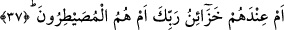

mı yaratıldılar? Maksad şudur; onlar Âdem’dendirler ve âdemoğlundan dünyaya
gelmişlerdir. Kendini dahi bilemeyen ve akledemeyen cansızlardan değildirler.
“Yoksa kendileri mi yaratıcıdırlar?” Yoksa kendilerini yaratanlar bizzat kendileri
midir ki bu nedenle Allah Teâlâ’ya ibâdet etmiyorlar?!
36. Yoksa gökleri ve yeri onlar mı yarattılar? Hayır! Onlar bir türlü anlayıp
inanmazlar.
Yâni onlara: “Sizi, gökleri ve yeri kim yarattı?” diye sorulduğunda “Allah” dedikleri
halde aslında onlar bu söylediklerinde kesin inanç sâhibi değillerdir. Zira böyle olsaydı
zâten O’na ibâdetten yüz çevirmezlerdi.
37. Yahut Rabbinin hazineleri onların yanında mıdır? Ya da her şeye hakim olan
kendileri midir?
“Yahut Rabbinin hazineleri onların yanında mıdır? Hazâin kelimesi hızâne
kelimesinin çoğulu olup “mahzen” anlamındadır. Bir kimsenin malını korumaya alması
ve onu biriktirmesi mânâsında kullanılır. Mânâ şöyledir: Yoksa Rabbinin rızık ve
rahmet hazineleri onların yanında mıdır ki dilediklerine nübüvvet rızkını bahşedip
dilediklerinden de bunu alıkoysunlar? Yâni O’nun ilim ve hikmet hazineleri kendilerinin
yanında mıdır ki bu hikmetin öngördüğü kişilere bu hazineleri tevcih etsinler?
“Ya da her şeye hâkim olan kendileri midir?”Her şeye gâlib olan, herşeyi istedikleri
gibi yöneten ve hattâ ilahlık işini tanzim ile işleri kendi irâde ve meşîetleri
muvâcehesinde beyân edenler kendileri midir?
Aynu’l-maânî’de, âyet-i kerîmede geçen “musaytır/hâkim” lafzı şöyle açıklanır:
Onlar, insanlar üzerine tasallutta bulunup da onları kendi diledikleri şeyi yapmaya
zorlayan rabler midirler? Buna göre “musaytır”, satır kökünden gelmekte olup, sanki o
zorba, başına musallat olduğu garibana belli bir satır/sınır çekmekte ve onu aşmamasını
istemektedir.
Keşfu’l-esrâr’da denilir ki: Musaytır, herhangi bir kimsenin emri ve yasağı altında
bulunmayan ve dilediğini yapan zâlim ve zorba kişi anlamındadır. “ona hükmetmek,
sultasına almak” mânâsındadır.
Kâmûs’ta da Musaytır kelimesinin anlamı; rakîb/gözetleyen, hâfız, koruyan, bekleyen
ve mütesellıt/musallat olup zulmeden şeklinde verilmiştir. Satr’ın da kitap ve yaprak
gibi şeylerin safları, sırası fiil olarak da çizmek ve yazmak mânâlarını taşıdığı beyân